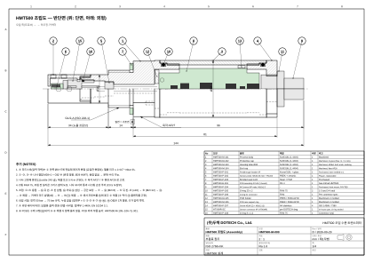
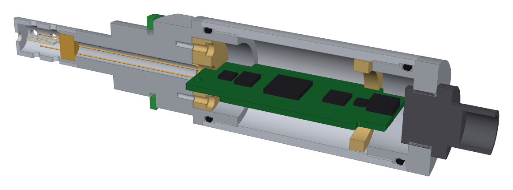

| 발행 | (주)두텍 DOTECH |
| 문서번호 | HMT500-RFQ-M-001 Rev C |
| 발행일 | 2026-09-26 |
| 담당자 | |
| 연락처 | |
| 회신 기한 |
HMT500은 유압유·윤활유·변압기 절연유 등 산업용 오일 속의 수분(수분 활동도 aw, ppm)과 온도를 연속 측정하는 인라인 트랜스미터입니다.
본 요청서는 기구 설계(3D/2D), 내압·밀봉·열 검토, 시제품 가공에 대한 견적을 요청합니다. 첨부 도면은 두텍의 개념 설계안이며, 상세 설계와 개선 제안을 환영합니다.


| 항목 | 요구 사양 |
|---|---|
| 외형 치수 (고정) | 노출 프로브 34 mm, 프로브 외경 Ø12, 공정 나사 G½ ISO 228-1 길이 14, 육각 AF27, 하우징 외경 Ø32, 전장 144 (Rev B: 나사·O링 결합부 벽 두께 확보를 위해 Ø30 → Ø32. 설치 치수 34 / G½ 14 / AF27은 유지). 상세 치수는 제작 도면 HMT500-M-000~104 Rev B 참조 |
| 외형 치수 (목표) | 씰면~하우징 끝 약 80 mm, 전장 약 145 mm 이하 (내부 수납이 가능하면 더 짧게) |
| 공정 연결 옵션 | ½" NPT 버전 가능 여부와 원가 차이를 제시 (육각 AF22 수준) |
| 사용 압력 | 기본 50 bar. 200 bar 고압형이 가능한지와 원가 차이를 제시 |
| 내압 / 파열 | 내압 시험: 정격의 1.5배 누설 없음 / 파열: 정격의 4배 이상 목표 |
| 오일 온도 | −40 ~ +120 °C (프로브·바디) |
| 주위 온도 | −40 ~ +70 °C (전자부 부품 온도 85 °C 이하 유지) |
| 보호 등급 | IP67 (커넥터 체결 상태), IEC 60529 |
| 접액부·하우징 재질 | SUS316L (1.4404), 재질 성적서 EN 10204 3.1 제공 |
| 씰 재질 | 기본 FKM. 에스테르유용으로 EPDM/FFKM 옵션 |
| 진동 / 충격 | IEC 60068-2-6 / -27 수준 (산업·모바일 유압 설치) |
| 표시 | 하우징 레이저 마킹 (모델명, 출력, 전원, 핀맵, 시리얼) — 문안은 두텍 제공 |
| 디자인 | 기능 치수 외 외관은 두텍 고유 디자인으로 제안 (타사 제품 외관과 차별화) |
| 번호 | 부품 | 요구사항 / 설계 포인트 |
|---|---|---|
| ① | 보호캡 | SUS316L, 측면 구멍과 끝단 구멍. 나사 결합 교체형. 유속별 2종(< 1 m/s, > 1 m/s). 옵션으로 소결 필터 삽입형. 오일이 잘 교환되도록 구멍 배치 제안 |
| ② | 센서 헤드 | 정전용량 습도 소자(IST AG MK 계열) + Pt1000을 캐리어에 실장. 소자 감지면은 막지 않을 것. 진동에 견디는 고정 구조 설계 |
| ③ | 캡 결합부 | 가는 나사(예: M10×0.75) + 풀림 방지 방식 제안 |
| ④ | 압력 격벽 | 가장 중요한 부위. 오일 압력을 받는 쪽과 전자부를 완전히 분리합니다. 유리-금속 밀봉(GTMS) 피드스루 4~6핀을 기본안으로 하며, 협력사 선정과 바디 접합(레이저 용접 등) 설계를 포함합니다. 기밀 목표는 헬륨 리크 1×10⁻⁸ mbar·l/s 수준(협력사 사양 확인) |
| ⑤ | 프로세스 바디 | SUS316L 일체 선삭: 프로브 튜브 + G½ 나사 + 언더컷 + 씰면. 씰면 표면거칠기와 평면도 지정 |
| ⑥ | 본디드 씰 | G½용 금속+고무 본디드 씰(DIN 3869 / USIT 형) 규격품 선정 |
| ⑦ | 육각 | AF27, 바디와 일체. 체결 토크 제시 |
| ⑧ | 하우징 | SUS316L Ø32 × 60, 양 끝 M28×1-6H + Ø29 H8 O링 보어. 내부에 축 방향 PCB 1장(57 × 23) 수납. 방열(전자부 발열 최대 약 1.5 W)과 오일 온도 120 °C 조건의 열 검토 |
| ⑨ | PCB 고정 | PCB 1장을 바디에 고정하는 수지 홀더(M-105, 바디에 M2 나사 2개)와 뒤쪽 지지링(M-106). 하우징·엔드캡 체결 회전이 PCB에 전달되지 않는 구조. 도면 HMT500-M-105~106 참조 |
| ⑩ | 바디–하우징 결합 | 나사 M28×1 + 반경 O링 25×2 FKM (바디–하우징, 하우징–엔드캡 모두, 시제·양산 공통). 용접 없음, 분해·수리 가능. 중강도 나사 고정제, 토크 5 N·m(TBD) |
| ⑪ | 엔드캡 | 커넥터 체결, O링 밀봉, IP67. 하우징 접지(EMC) 연결 구조 |
| ⑫ | M Connect 8핀 | 패널형 수컷. 품번은 두텍 제공. PCB 연결 방식(리드/FPC) 설계 |
| No | 업무 | 산출물 |
|---|---|---|
| 1 | 3D 모델링 (조립 + 부품) | STEP, 원본 CAD 파일 |
| 2 | 2D 도면 | 부품 가공도(공차, 표면거칠기, 피드스루 용접 기호), 조립도, 부품표(BOM) |
| 3 | 내압 구조 검토 | 계산서 또는 FEA 보고서 (50 bar, 선택 시 200 bar) |
| 4 | 압력 격벽(피드스루) 설계 | 피드스루 사양서, 협력사 견적, 접합 공정 제안 |
| 5 | 밀봉·열 검토 | O링 홈 설계, IP67 구조, 열 검토 결과 |
| 6 | 시제품 가공 및 조립 (선택) | 시제품 세트 (예: 5세트), 조립 지원 |
| 7 | 시험 지원 (선택) | 내압 시험, 헬륨 리크 시험, IP67 시험 성적 |
| 8 | 양산 원가 산출 | 부품별 양산 단가 (1,000대 / 5,000대) |
| 항목 | 금액 / 기간 |
|---|---|
| 기구 설계비 (항목 1~5) | |
| 시제품 가공비 (세트당 / 총액, 수량 명시) | |
| 압력 격벽 피드스루 단가 (시제 / 1,000개) | |
| 양산 가공 단가: 바디, 하우징, 엔드캡, 보호캡, 피드스루 용접·O링 조립·마킹 (1,000 / 5,000대) | |
| 200 bar 고압형 추가 비용 (선택) | |
| ½" NPT 버전 추가 비용 (선택) | |
| 지그·치구비 | |
| 시험 지원비 (선택) | |
| 일정: 설계 완료 / 시제품 납품 | |
| 지급 조건, 견적 유효 기간 |
본 문서와 첨부 도면은 (주)두텍의 기밀 정보입니다. 견적 검토 목적으로만 사용하고, 제3자에게 공개하지 마십시오. 필요하면 비밀유지계약(NDA)을 체결합니다.